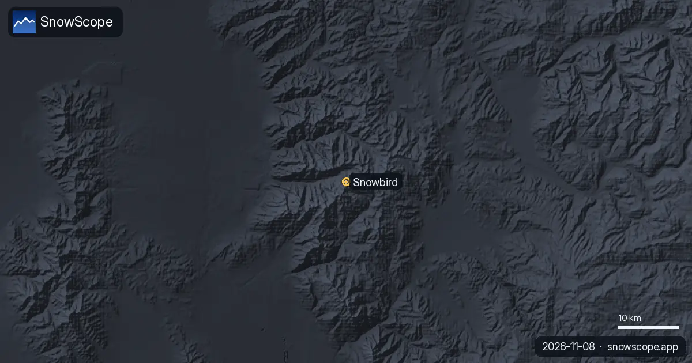

Cómo llegar a Snowbird: Little Cottonwood Canyon, la ley de tracción y el bus de esquí
Snowbird está al final de una única carretera, Little Cottonwood Canyon (SR-210), que comparte con Alta. Llegar es fácil un día despejado y lento un día de tormenta: los neumáticos del coche y la hora de salida importan más que la distancia.
Consulta la previsión de nieve en tiempo real de Snowbird en la app SnowScopeEspesor de nieve, alertas de nieve polvo y mapa 3D, gratis.La distancia: muy cerca de la ciudad
Snowbird está a unas 29 millas (47 km) del aeropuerto internacional de Salt Lake City, a 24 millas (39 km) del centro y a 4 millas (6 km) al este del barrio de Sandy, donde empieza el cañón. Desde la entrada del cañón solo hay un camino para subir y el mismo para bajar: UDOT recuerda que en invierno las carreteras de los Cottonwood Canyons no tienen salida, así que lleva lo que necesites para el día.

Antes de subir: la ley de tracción
Cuando las balizas a la entrada de los cañones parpadean, rige la ley de tracción (traction law) en la SR-210 y la SR-190, y UDOT puede activarla hasta 24 horas antes de una tormenta. Los neumáticos deben tener al menos 5/32 de pulgada de dibujo. Los coches 4x4 o de tracción total necesitan como mínimo neumáticos M+S en todas las ruedas; los de tracción a dos ruedas, neumáticos de invierno certificados (3PMSF) en todas las ruedas, o cadenas o fundas de nieve en dos ruedas motrices.
Los coches de alquiler de Salt Lake City suelen llevar neumáticos de todo tiempo: pregunta por los neumáticos al reservar o toma el autobús.
Deja el coche: el bus de esquí de UTA
La línea 994 de UTA y las líneas Canyon Service suben por Little Cottonwood Canyon hasta Snowbird y Alta. La mayoría de las líneas de bus de esquí están previstas del 6 de diciembre al 11 de abril, y las líneas de UTA pueden empezar antes si las estaciones abren antes; consulta la app Transit o UTA antes de salir. Una mañana de nieve polvo, el bus también te ahorra buscar aparcamiento.
El mismo día: el estado de la carretera
UDOT publica en directo el estado de la SR-190 y la SR-210, con cierres y restricciones de tracción, además de cámaras. Si no aparece ningún aviso, las carreteras están abiertas sin cierres ni restricciones previstas. Míralo antes de salir del valle y otra vez antes de bajar por la tarde.
Por qué merece el viaje
La carretera del cañón lleva a mucha nieve. Nuestro histórico de nieve a media montaña, 9357 ft (2852 m), da un máximo de temporada habitual de unas 96 in (244 cm) y nieve en el suelo unos 220 días en un invierno típico, con la nieve más gruesa normalmente en marzo. Son valores de modelo de inviernos pasados, no partes de la estación.
Consejos para esquiadores
- Consulta el estado de UDOT de los Cottonwood Canyons antes de subir y antes de bajar.
- ¿Sin neumáticos adecuados? Toma la línea 994 de UTA o el bus Canyon Service.
- Los días de tormenta sal temprano: la única carretera del cañón se llena rápido.
- Para salir fuera de pista desde el cañón, lee antes el boletín del Utah Avalanche Center.
Referencias y créditos
- Utah Department of Transportation (UDOT), Cottonwood Canyons - Roads to Recreation (retrieved 8 November 2026). cottonwoodcanyons.udot.utah.gov/
- UDOT, Traction Law for Big and Little Cottonwood Canyons (retrieved 8 November 2026). cottonwoodcanyons.udot.utah.gov/traction-law/
- Utah Transit Authority (UTA), Ski Service (retrieved 8 November 2026). www.rideuta.com/Rider-Info/Ski-Service
- Wikipedia, 'Snowbird, Utah' (retrieved 8 November 2026). en.wikipedia.org/wiki/Snowbird,_Utah
Sobre estas cifras
Cifras de nieve: histórico de nieve de SnowScope, 46 inviernos pasados (1980-81 a 2025-26) a tres alturas de la estación, un modelo del pasado corregido por altitud (una estimación para una zona, no partes de la estación). Remontes, pistas y acceso: las fuentes de abajo, comprobadas en la fecha indicada.
Boletines oficiales de aludes: Utah Avalanche Center
Citar este informe
Para investigación, docencia o prensa: cifras y gráficos reutilizables libremente bajo CC BY 4.0 con esta cita.
SnowScope (2026), Cómo llegar a Snowbird: Little Cottonwood Canyon, la ley de tracción y el bus de esquí, https://snowscope.app/blog/es/2026/11/how-to-get-to-snowbird-little-cottonwood-canyon.html, consultado el 2026-11-09
SnowScope (Atlas Labs). (2026, November 9). Cómo llegar a Snowbird: Little Cottonwood Canyon, la ley de tracción y el bus de esquí. SnowScope snow reports. https://snowscope.app/blog/es/2026/11/how-to-get-to-snowbird-little-cottonwood-canyon.html
BibTeX
@misc{snowscope2026howtogettosnowbirdlittle,
author = {{SnowScope (Atlas Labs)}},
title = {Cómo llegar a Snowbird: Little Cottonwood Canyon, la ley de tracción y el bus de esquí},
year = {2026},
month = nov,
howpublished = {\url{https://snowscope.app/blog/es/2026/11/how-to-get-to-snowbird-little-cottonwood-canyon.html}},
note = {Published 2026-11-09 18:47 UTC; accessed 2026-11-09}
}· CC BY 4.0 · Métodos, datos y herramientas →
Snowbird: nieve y temperatura según la altura, este invierno vs el pasado (herramientas) →
Más partes de nieve

Comparamos la nieve de hoy en 5 estaciones en el oeste de EE. UU. con la misma fecha de cada uno de los 46 inviernos pasados. 3 están claramente por …

Hasta el 9 de noviembre, nuestra previsión da 13 in (33 cm) en Mt Baker, 5 in (12 cm) en Hurricane Ridge y 4 in (10 cm) en Mt. Hood Meadows. Las …

Telluride, manto de nieve: una capa de 45 in en la parte alta (8 de noviembre). Donde más nieve hay en el oeste de EE. UU. es en Kendall Mountain: …